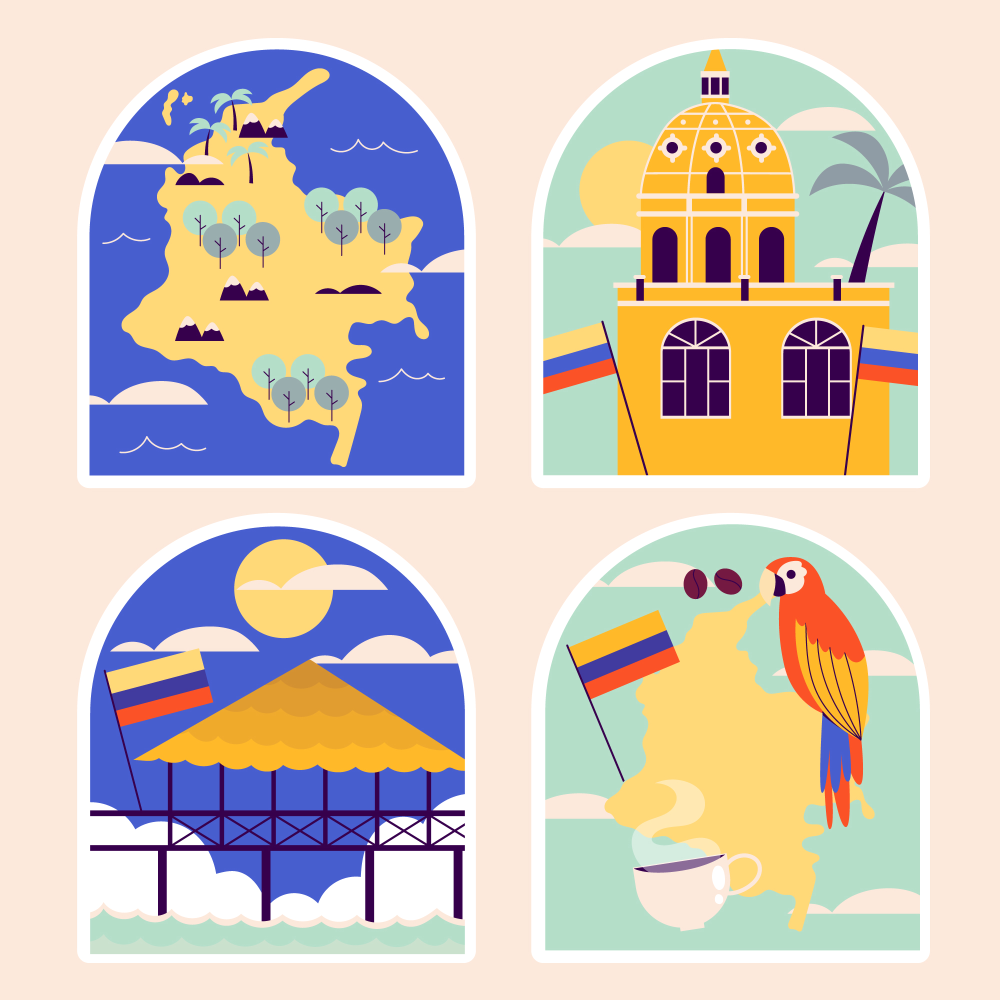

PROAGRO esta pensada para ti, el campesino colombiano queremos ser parte de tu familia
En esta proyecto nos preocupamos por el desarrollo de la región, por tal motivo queremos ayudarte a superar las barreras tecnicas en la produccion agricola.

¿Por que ser parte de PROAGRO... ? Trabajar con nosotros tiene increibles beneficios
Acceso a información tecnica de calidad, descuentos en la realización de estudios de suelos, menores gastos en insumos y mayor producción, que se traduce en mas ingresos para ti.

Creemos en tu potencial
Por eso queremos darte las herramientas para que lo explotes al maximo, estas a solo un clic de una mejor producción agricola, estas a solo un clic de ayudar a construir una Colombia mejor.
